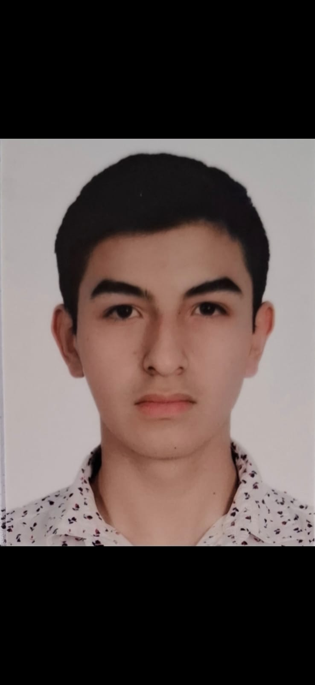
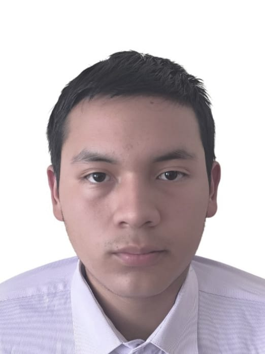
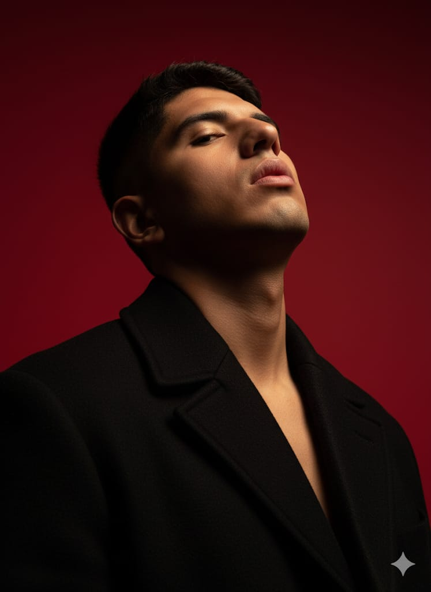
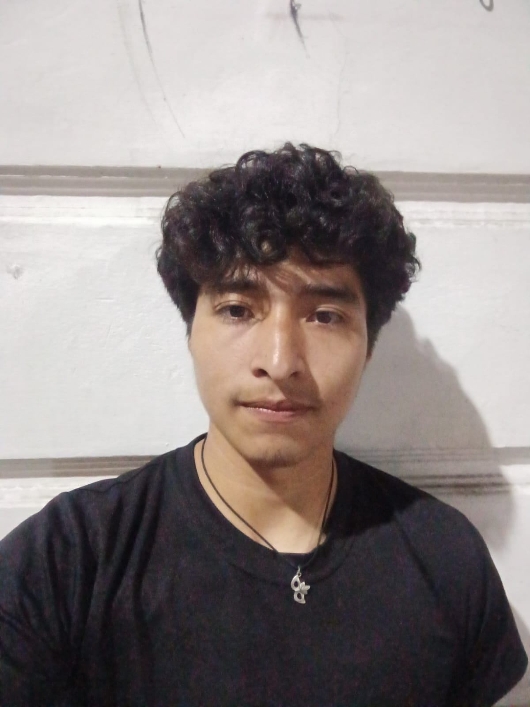
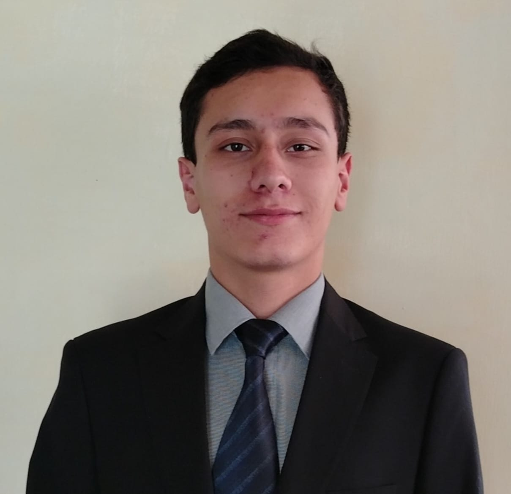

Sistema monitoreado con Arduino Uno Q/ESP32
Desarrollar soluciones tecnológicas accesibles y eficientes para el monitoreo de condiciones ambientales en la agricultura boliviana, proporcionando a los agricultores herramientas precisas para la toma de decisiones informadas que mejoren la productividad y sostenibilidad de sus cultivos mediante el uso de sensores inteligentes y análisis de datos en tiempo real.
Ser líderes en innovación agrícola tecnológica en Bolivia, transformando las prácticas agrícolas tradicionales mediante la implementación de sistemas IoT (Internet de las Cosas) que democraticen el acceso a tecnología de precisión, contribuyendo al desarrollo sostenible del sector agrícola nacional y mejorando la calidad de vida de las comunidades rurales.
Sensores monitoreados por IA que mide en tiempo real las condiciones críticas para la agricultura
Nuestro sistema Arduino incorpora sensores de temperatura de alta precisión que monitorean constantemente las condiciones térmicas del ambiente agrícola.
¿Qué mide?
Temperatura ambiente en grados Celsius (°C) con una precisión de ±0.5°C
¿Por qué es importante?
La temperatura óptima (15-30°C) es crucial para la germinación de semillas y el crecimiento saludable de las plantas. Temperaturas extremas pueden afectar negativamente el desarrollo de los cultivos.
Aplicaciones:
Detecta heladas, olas de calor, y determina los mejores momentos para siembra y cosecha.
Sistema dual de medición de humedad ambiental y del suelo implementado con Arduino para un control completo de las condiciones hídricas.
¿Qué mide?
Humedad relativa del aire (%) y humedad del suelo (%) mediante sensores capacitivos y resistivos
¿Por qué es importante?
La humedad adecuada (50-70% aire, 55-75% suelo) previene enfermedades, optimiza la absorción de nutrientes y asegura una germinación exitosa. Niveles incorrectos pueden causar estrés hídrico o pudrición de raíces.
Aplicaciones:
Programación inteligente de riego, prevención de sequías, detección de exceso de agua, y optimización del uso de recursos hídricos.
Sensores monitoreados por IA, procesa datos en tiempo real y genera alertas inteligentes.
Características:
Microcontrolador Arduino Uno Q/ESP32, lectura cada 10 minutos, Datos transmitidos al Usuario
Funcionalidades:
Cálculo de índices de confort, detección de condiciones óptimas para siembra, generación de alertas por condiciones adversas, y registro histórico de datos.
Conectividad:
Módulo WiFi/Bluetooth para transmisión de datos a dispositivos móviles y computadoras para análisis avanzado.
Somos un grupo de estudiantes apasionados por la tecnología y la agricultura, comprometidos con el desarrollo de soluciones innovadoras que beneficien a nuestra comunidad. Nuestro equipo combina conocimientos en electrónica, programación y agronomía para crear herramientas que marquen la diferencia.

joseandres.mc@gmail.com

sebastianrodolfo.vr@gmail.com

juan.castelo.ayaviri@gmail.com

mgarvizu.c@gmail.com

a.pelaez.palma@gmail.com
Contactanos: climasense.team@gmail.com
Descubre cómo ClimaSense monitorea en tiempo real las condiciones agrícolas de tu región
Elige tu plan de suscripción: